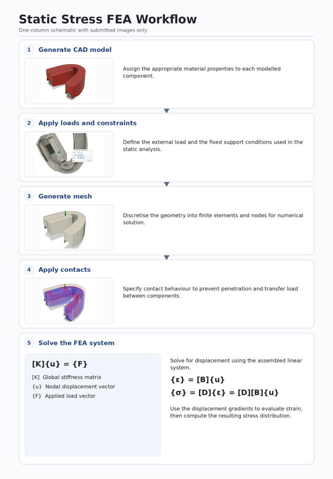
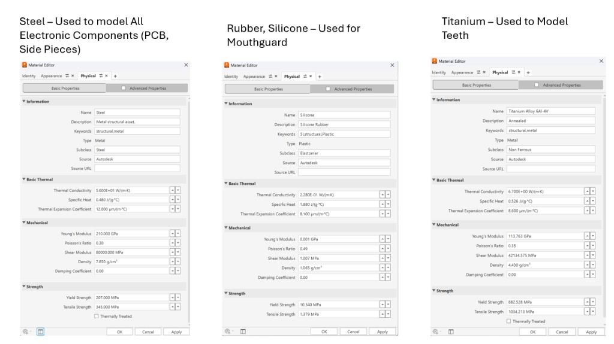
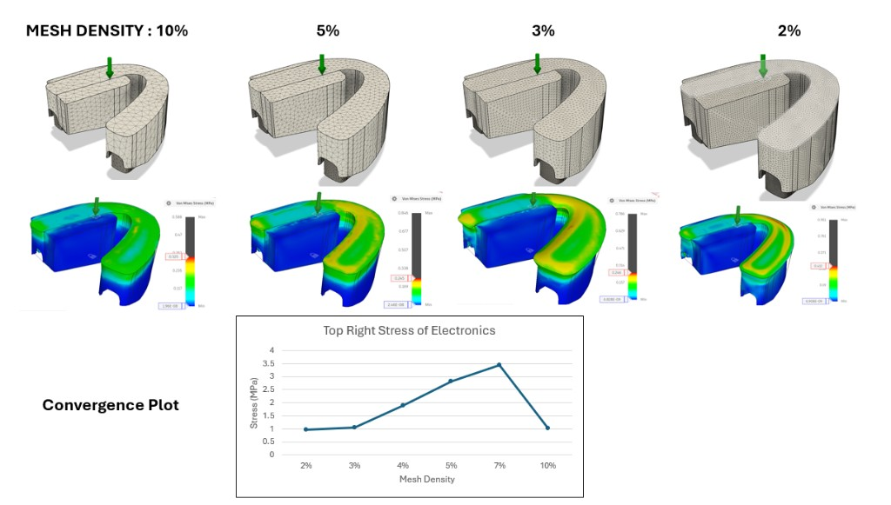
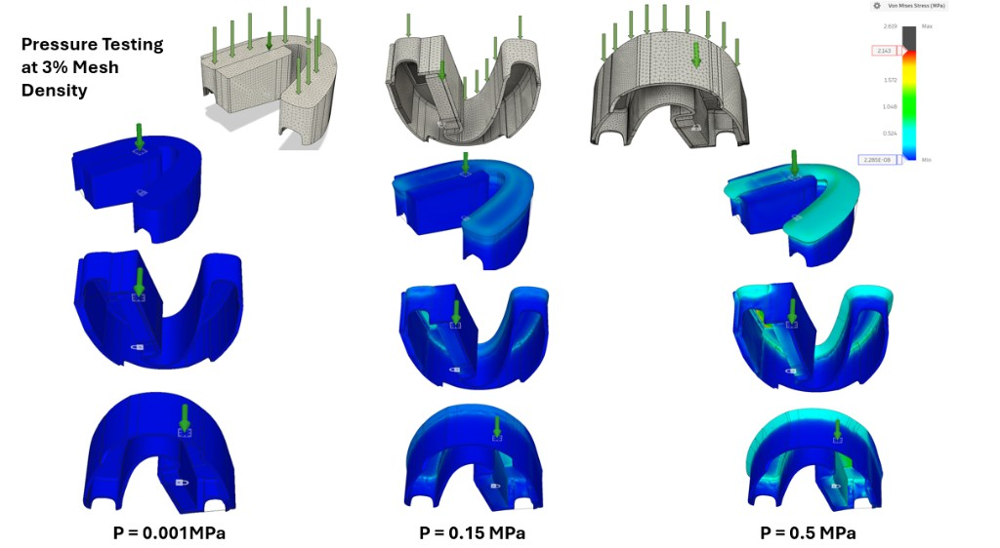
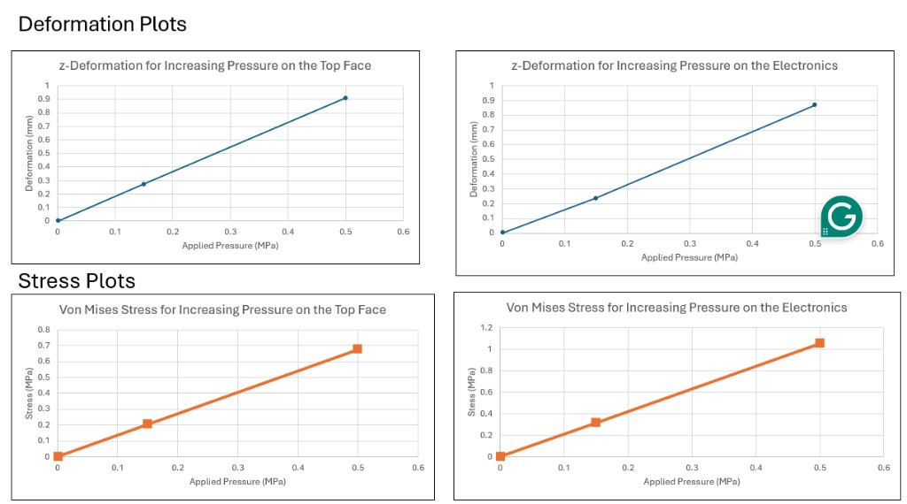
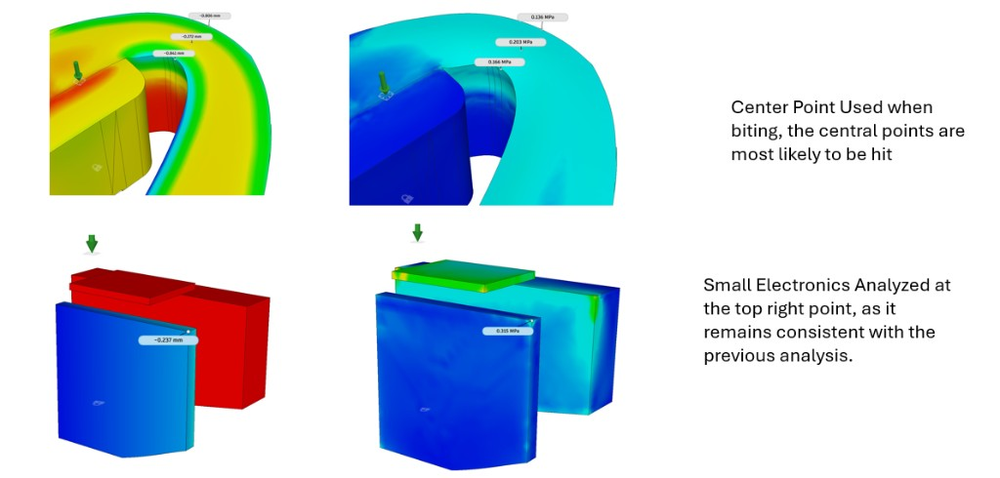

NanoBioElectronic Lab — Simulation Research
As a research assistant in the Nano Bioelectronics (NBE) Lab at UC San Diego, I support wearable biosensing devices through simulation-driven mechanical and fluid analysis. My work spans CAD modeling, finite-element analysis (FEA), computational fluid dynamics (CFD), and theoretical benchmarks that guide experimental design.
Project 1 — Mouthguard sensor: static stress and structural analysis
Objective
Evaluate the structural integrity of a bioelectronic mouthguard under realistic bite-force loading.
Contributions
- Built the full CAD model of the mouthguard and embedded electronics geometry
- Identified load-critical regions based on expected bite-force locations and boundary conditions
- Performed static stress FEA to evaluate deformation, stress concentrations, and safety factor trends
- Conducted mesh and pressure sensitivity studies to benchmark the reliability of the simulation results
- Compared material behavior across the mouthguard, electronics, and tooth-contact interfaces to support design decisions
- Provided simulation-based recommendations for geometry and material modifications to improve structural durability
Impact
This analysis helped refine the internal structure of the mouthguard, reducing stress concentrations and improving confidence in its durability under real-world loading conditions.
Simulation figures






Project 2 — Wearable sweat-sensing system for glucose monitoring (ongoing)
I am modeling sweat transport through fully saturated porous paper to emulate fluid movement inside an in-ear wearable biosensing device. The paper is pre-wetted by a hydrogel layer; incoming sweat mixes with the hydrogel before reaching a sensor that selectively detects sweat glucose.
Current work
I am developing a physics-based model that predicts sweat flow as a function of evaporation rate, porous-media properties, and fluid mixing behavior. This includes researching appropriate transport models for fully saturated porous materials and determining how evaporation influences flow velocity and concentration gradients.
Next steps
I will run a controlled lab experiment to measure the evaporation rate of the hydrogel–paper system. Those values will parameterize a COMSOL Multiphysics simulation of sweat transport through the porous medium. The final model will provide a theoretical benchmark for the lab’s wearable sensor design and support optimization of material selection and device geometry.
Technical skills
- Simulation: COMSOL Multiphysics (CFD, FEA), Autodesk Fusion 360 (FEA)
- CAD: Autodesk Fusion 360
- Analysis: Static stress analysis, fluid transport modeling, material behavior
- Research: Data interpretation, model validation, documentation for publication-ready figures